Homework 1: Setup
In CS 61B, we write code using real-world industry tools, and you’ll install those tools in this assignment.
Tools Overview: Terminal
There’s nothing to do in this section; you just need to read through it carefully. The actual tasks start at Task 1.
In CS 61B, we will use the terminal to run various commands.
When you work in a terminal, the terminal always has a working directory, which is the folder that the terminal is currently thinking about.
- The
lscommand lists all of the files in the working directory. - The
pwdcommand prints out the working directory. - The
cdcommand changes the working directory.
Many terminal commands behave differently depending on your working directory, so it is very important to ensure you are in the correct working directory before running a command! Remember, you can use pwd to check the working directory.
Further reading: Terminal guide
Tools Overview: Git
There’s nothing to do in this section; you just need to read through it carefully. The actual tasks start at Task 1.
Almost all computer scientists use Git when writing code. Git lets you take snapshots of different versions of your code (useful if you want to revert to an earlier version). Here’s a demo video:
Git also lets you sync a repository (a folder containing your code) on different computers. For example, you and your partner will use Git in later projects to work together.
One common place to sync code is GitHub. You can think of GitHub as a really big computer on the cloud, and everybody can sync their code to this computer (e.g. to save a backup copy, or to share the code with the world).
Git is very complicated, but there are a few core commands you should know for CS 61B.
- To copy a repo from GitHub to your computer (creating a new folder on your computer), use this command:
git clone git@github.com:oski/name-of-oskis-repo.git - To sync code from a repo on your computer, to a repo on GitHub, use these three commands:
# First, take a snapshot of your code. (The commit message is mandatory!) git add . git commit -m "your commit message here" # Then, send your snapshot from your computer to GitHub. git push origin main - To retrieve updates from a repo on GitHub, to a repo on your computer, use this command:
git pull skeleton main
This diagram shows the repositories we use in CS 61B, and the commands you can use to sync code between them. (Click to enlarge.)
Further reading: Git guide
That’s it for the overview. Now, let’s start setting up your computer!
- If something isn’t working, do not try random things you find online. Ask a TA for help.
- Everyone should complete this lab on their own computer (no partners).
- Do not skip steps, or else you will run into errors later.
Task 1: Install Git
Click your operating system to see instructions.
macOS
-
xcode-select --installThis might take some time.
If you see “Command line tools are already installed,” move on to the next step (and make sure you see the version number in the next step).
-
git --versionYou should see a version number like
git version 2.51.0(a different number is fine) and no errors.
Windows
-
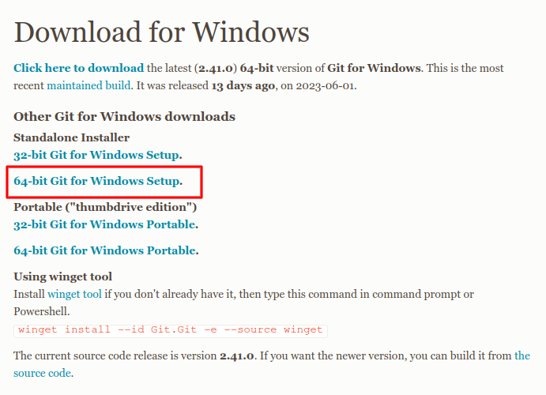
-
We’ll only be selecting different options on the Select Components page, where we add a Git bash profile to the windows terminal.
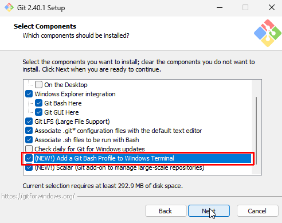
All the other options should be left as is. The entire install process is shown in the gif below:
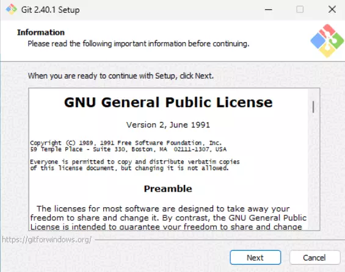
-
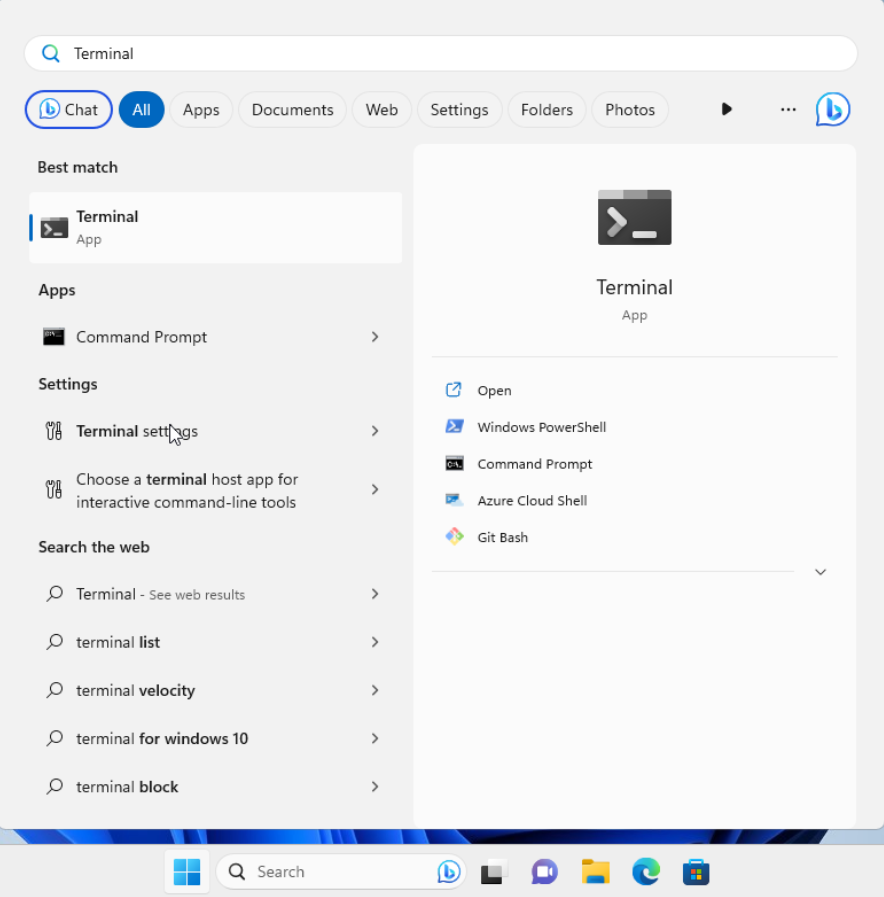
Older Windows versions may not have the Terminal app pre-installed. If you can’t find Terminal, install it from the Microsoft Store.
-
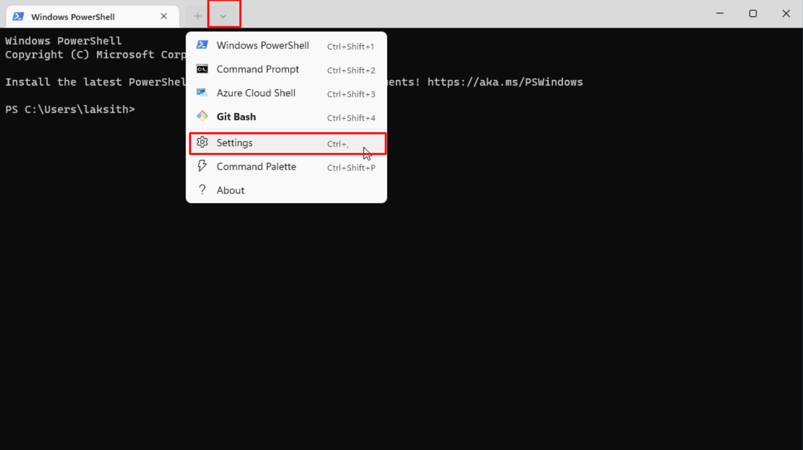
-
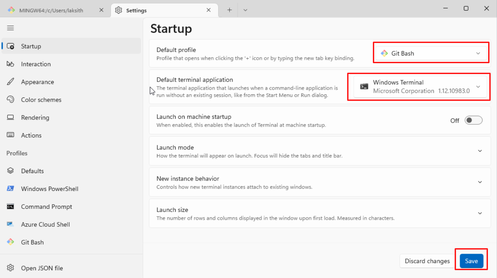
-
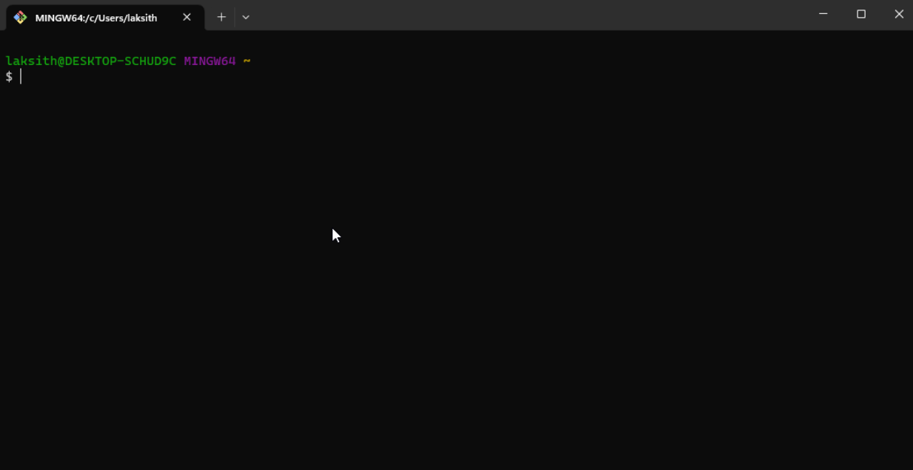
Linux
-
sudo apt install git curlFor other Linux distributions, you might need to replace
apt installwithyum installor something else. -
git --versionYou should see a version number like
git version 2.51.0(a different number is fine) and no errors.
Task 2: Create GitHub repository
-
If you already have an account, you do not need to create a new one.
-
This email will be sent to the email that you used to create your GitHub account, which may not necessarily be your Berkeley email.
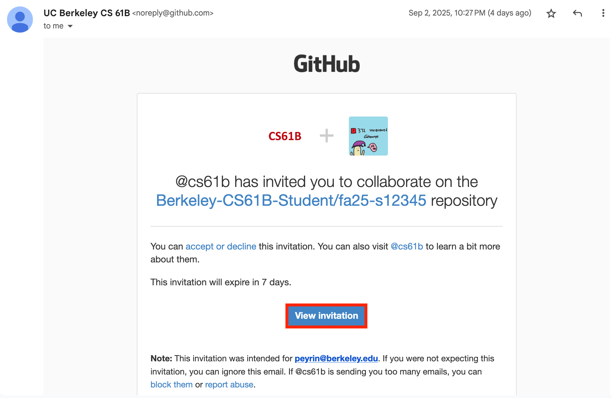
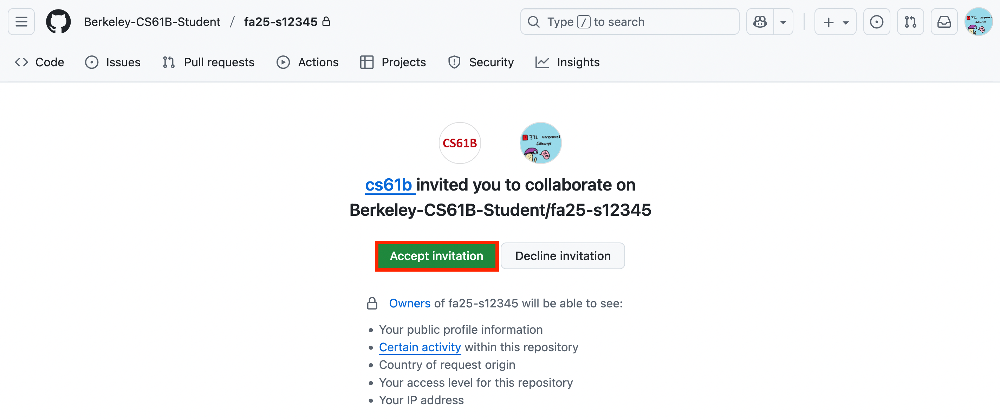
-
If you do not see a number (e.g. it says None), click the “Redo Registration” button. If that fails, make a post on Ed.
Task 3: Set Up Git
-
Run this:
git config --global user.name "oski"Then, run this:
git config --global user.email "oski@berkeley.edu" -
git config --global init.defaultBranch mainThen, run this:
git config --global pull.rebase falseThen, run this:
git config --global core.editor "nano -w"
Task 4: Authenticate to GitHub
-
curl -sS --ssl-no-revoke https://fa25.datastructur.es/assets/homeworks/hw01/get-ssh-key.sh | bashIn the output, you should see a line similar to one of these:
Great! Your new SSH key is at: ~/.ssh/id_ed25519.pub You already have an SSH key at: ~/.ssh/id_ed25519.pub -
cat ~/.ssh/id_ed25519.pubYou should see output similar to this:
ssh-ed25519 AAAAC3NzaC1lZDI1N6jpH3Bnbebi7Xz7wMr20LxZCKi3U8UQTE5AAAAIBTc2HwlbOi8T oski@oski -
Go to GitHub’s SSH settings page and paste the output in the Key box.
The title can be anything you want (e.g. “Laptop” or “Desktop” if you have multiple computers). Leave “Key type” as “Authentication Key.” Click “Add SSH key” to add the key.
If you are retaking the class, you might see “Key is already in use.” If so, move on to the next step (and make sure you see the success message in the next step).
-
ssh -T git@github.comIf the system asks “The key is not know by any other names. Are you sure you want to continue connecting (yes/no/[fingerprint])?”, type “yes”.
If you see output like this, you’re done with this step:
Hi USERNAME! You've successfully authenticated, but GitHub does not provide shell access.If you have multiple GitHub accounts, make sure that
USERNAMEis the same as the GitHub account you used in Task 2.If you don’t see this output, redo the steps in this section. If it still doesn’t work after redoing the steps, ask TAs for help.
Task 5: Cloning Repositories
When you work in a terminal, the terminal always has a working directory, which is the folder that the terminal is currently thinking about.
- The
cdcommand can be used to change the working directory.- The
pwdcommand can be used to print out the working directory.Many terminal commands behave differently depending on your working directory. In this task, it is very important to ensure you are in the correct working directory before running a command.
For example, the command
touch potato.txtcreates a new filepotato.txtin the working directory. If you run this command while in the wrong directory, you’d create the file in the wrong folder!
-
The
cs61bfolder can live anywhere, but we recommend putting it on your Desktop so that you don’t lose it. -
cd ~/Desktop/cs61bIf you’re not sure how to use
cd, read this terminal guide. -
pwdThe output should end in
cs61b(e.g./home/oski/Desktop/cs61b). This means that your terminal’s working directory is thecs61bfolder. -
git clone git@github.com:Berkeley-CS61B/library-fa25.gitIf the command worked, your
cs61bfolder should now have a sub-folder namedlibrary-fa25in it. You can check this by runninglsin the terminal, or opening a file explorer. -
ls library-fa25This command lists the content of the
library-fa25folder. The output should have some lines like this:algs4.jar animated-gif-lib-1.4.jar antlr4-runtime-4.11.1.jar apiguardian-api-1.1.2.jar -
pwdThe output should end in
cs61b(e.g./home/oski/Desktop/cs61b). If not, usecdto change the working directory. -
git clone git@github.com:Berkeley-CS61B-Student/fa25-s12345.gitIf the command worked, your
cs61bfolder should now have a sub-folder named something likefa25-s12345. You can check this by runninglsin the terminal, or opening a file explorer.Do not run a
git clonecommand multiple times. It will create multiple copies of the same folder on your computer, and this will cause trouble later.If you think you messed up this step, use a file explorer to search for folders on your computer named
fa25-s12345. You should only have a single one!If you see a message like “warning: You appear to have cloned an empty repository,” it is safe to ignore.
-
cd fa25-s12345 -
git remote add skeleton git@github.com:Berkeley-CS61B/skeleton-fa25.gitIf you see a message like “fatal: not a git repository,” make sure you did the previous step.
-
git remote -vMake sure you see 4 lines of output like this:
origin git@github.com:Berkeley-CS61B-Student/fa25-s12345.git (fetch) origin git@github.com:Berkeley-CS61B-Student/fa25-s12345.git (push) skeleton git@github.com:Berkeley-CS61B/skeleton-fa25.git (fetch) skeleton git@github.com:Berkeley-CS61B/skeleton-fa25.git (push) -
git pull skeleton mainIf the command worked, your
fa25-s12345folder should now have a sub-folder namedhw01in it. You can check this by runninglsin the terminal, or opening a file explorer.If you see “fatal: refusing to merge unrelated histories,” try running
git pull skeleton main --allow-unrelated-histories --no-rebaseinstead. -
git branch -M main -
cs61b ├── library-fa25 │ ├── algs4.jar │ ├── animated-gif-lib-1.4.jar │ ├── antlr4-runtime-4.11.1.jar │ ├── apiguardian-api-1.1.2.jar │ └── ... ├── fa25-s12345 │ ├── hw01 │ │ ├── src │ │ │ └── Arithmetic.java │ │ ├── tests │ │ │ └── ArithmeticTest.javaWe do not want these folders nested!
library-fa25should not be insidefa25-s12345, or vice-versa. If the folders are nested, use a file explorer to fix this.
Task 6: Set up IntelliJ
-
Also, ensure you have at least 2 GB of free RAM (i.e. close other programs you don’t need).
-
You have to scroll down to find the Community Edition.
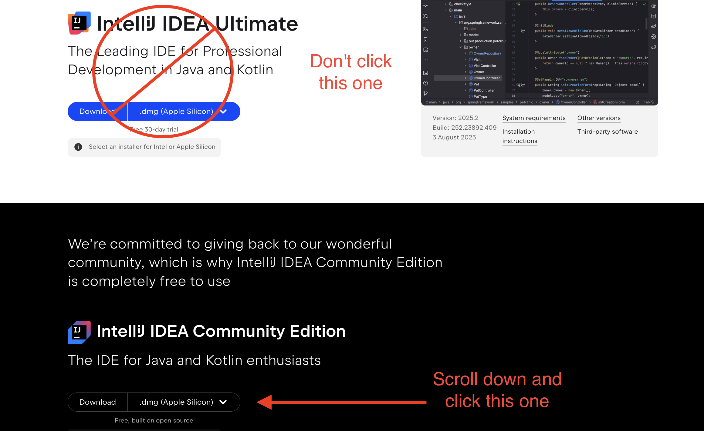
For macOS users: If you have an M1, M2, M3 Mac, select “.dmg (Apple Silicon).” Otherwise, select “.dmg (Intel).”
-
On the window that appears, click “Marketplace” and enter “CS 61B” in the search bar at the top. The CS 61B plugin entry should appear.
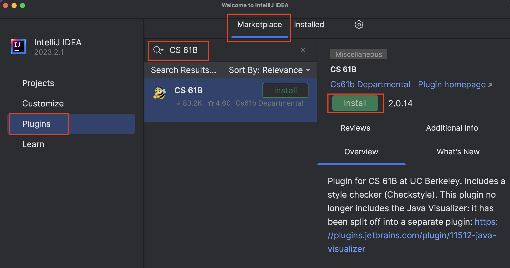
If you have the plugin installed from a prior term, make sure to update it.
-
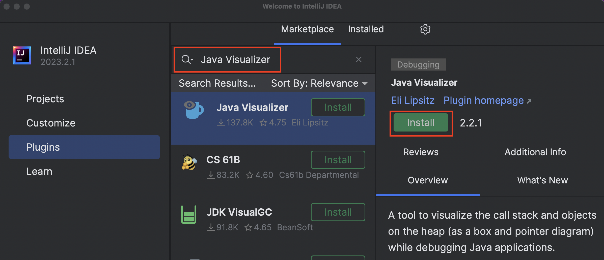
Task 7: Install Java
-
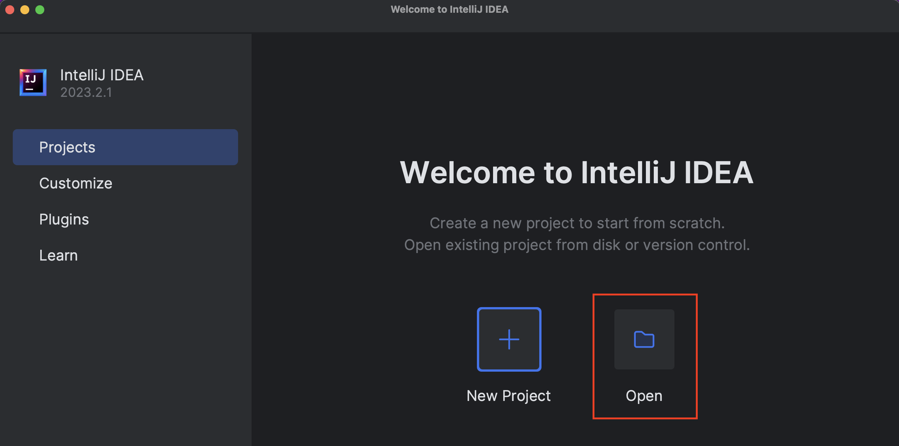
-
Do not choose the entire
fa25-12345folder. We want thehw01sub-folder specifically.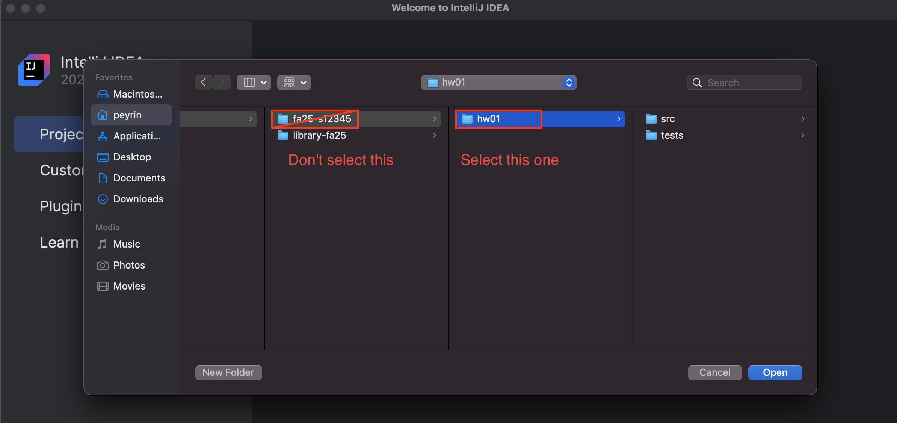
-
If you see 21 in the SDK drop-down, simply select 21.
If you do not see 21 in the SDK drop-down, click “Download JDK” to download Microsoft OpenJDK 21.
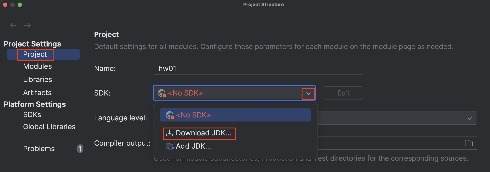
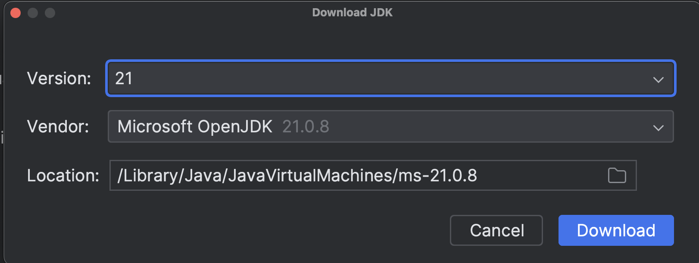
-
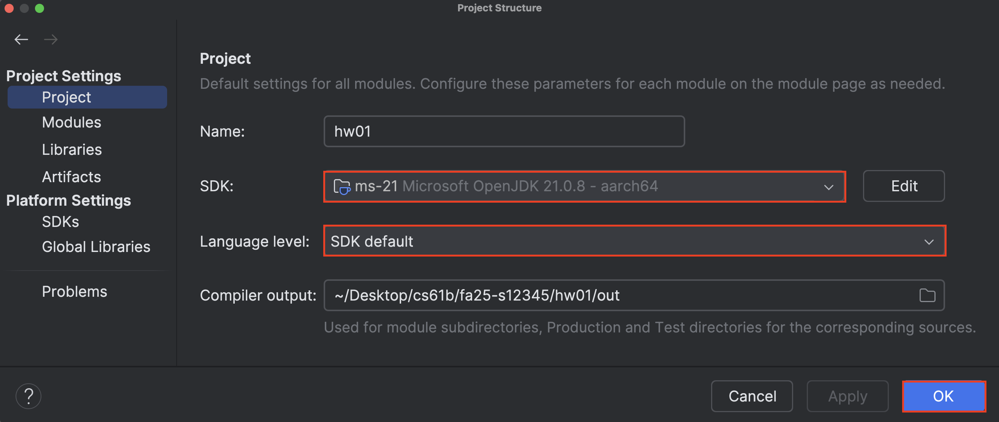
Task 8: Write code in IntelliJ
-
For the rest of the semester, every time you open an assignment, you have to follow those steps again. (Sorry, we know it’s tedious.)
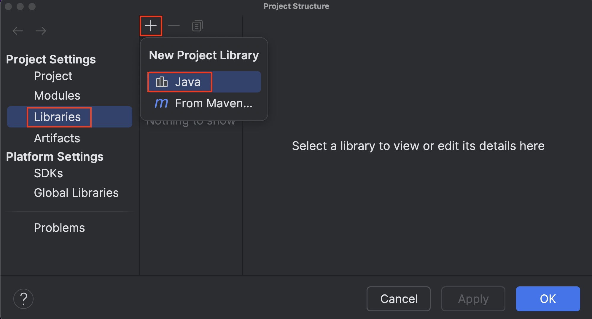
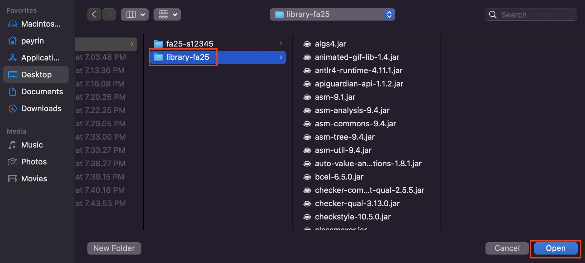
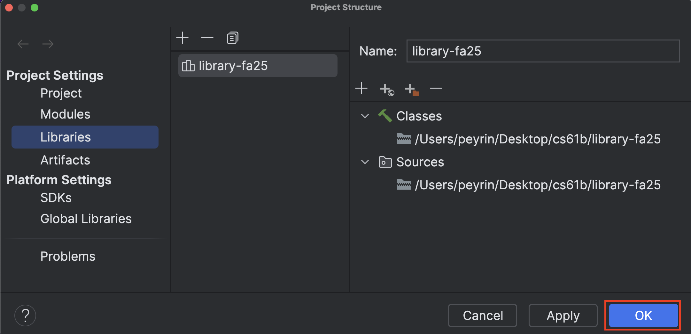
-
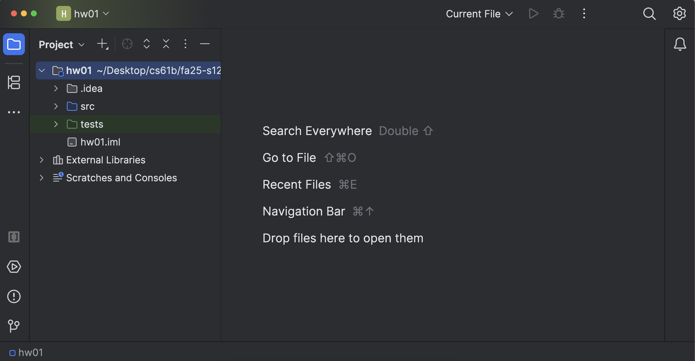
-
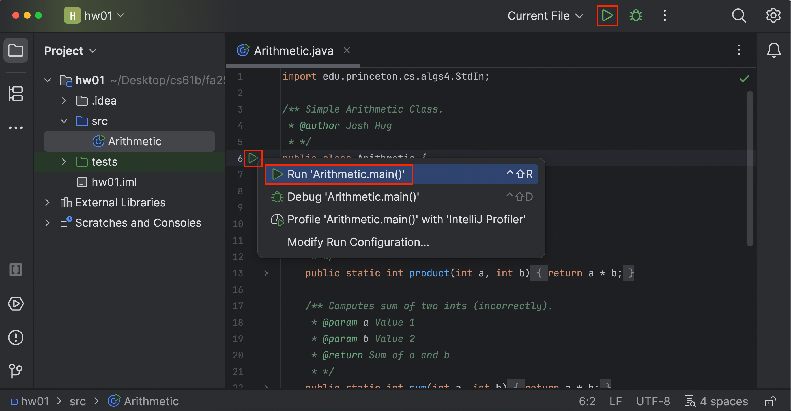
If you get an error like
package edu.princeton.cs.algs4 does not exist, make sure you followed the Assignment Workflow Guide in Step 1 of this task! -
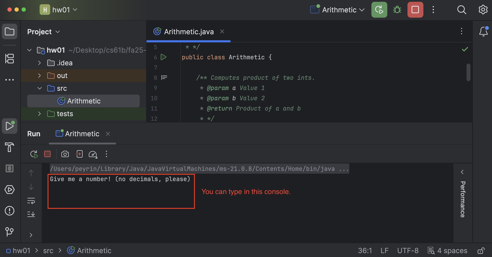
If you follow the prompts, you will probably see that the math is wrong! Don’t fix it yet.
-
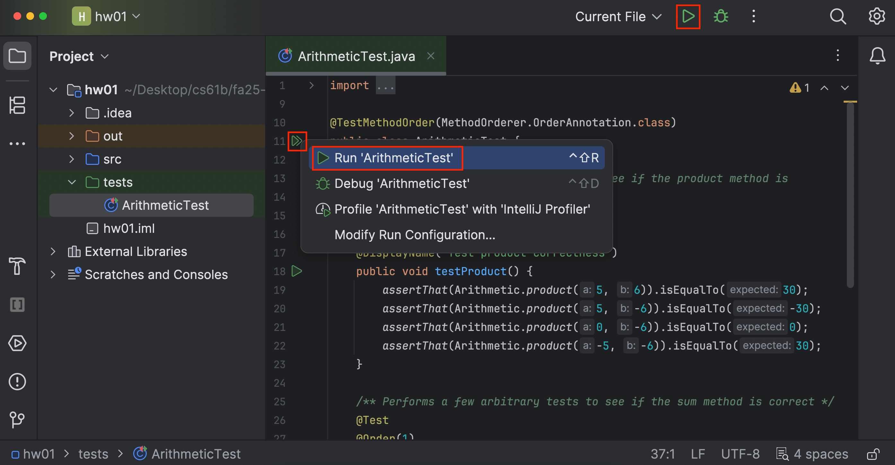
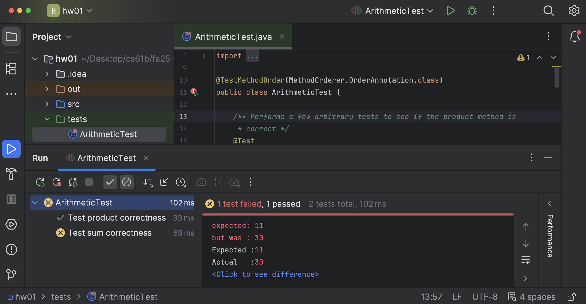
We can see that “Test product correctness” passed, but “Test sum correctness” failed.
Task 9: Submitting your work
-
git statusThe output will tell you if you have any unsynced changes:
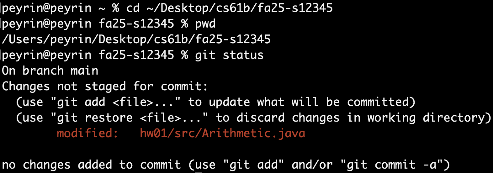
This means your edit to
Arithmetic.javais on your local computer, but not on GitHub. -
Tell Git to track the
Arithmetic.javafile:git add hw01/src/Arithmetic.javaTake a snapshot of your changes:
git commit -m "fixed Arithmetic.java in hw01"Send that snapshot from your computer to GitHub:
git push origin mainFor future assignments, you can replace
hw01/src/Arithmetic.javain the first command to add other files. You can also replace the message in quotes in the second command to describe your changes. -
You can also open https://github.com/Berkeley-CS61B-Student/fa25-s12345, and you should see your changes synced on GitHub!
-
Select GitHub, then your
fa25-s12345repository and themainbranch, and submit your assignment.If you don’t see the repository, you may need to link your GitHub account to Gradescope.
-
Congratulations on finishing the homework!
Appendix: Common Issues
Q: How do I set up a second computer or a new computer?
Setting up a second computer requires redoing Tasks 1, 3, 4, 5, 6, 7 on your second computer.
You would need to keep the two repos on the two computers in sync by running git push origin main on computer 1 (to send updates from computer 1 to GitHub), and git pull origin main on computer 2 (to download the updates from GitHub).